<!DOCTYPE HTML>
<html lang="en" >
    
    <head>
        
        <meta charset="UTF-8">
        <meta http-equiv="X-UA-Compatible" content="IE=edge" />
        <title>管理站点 | 欢迎学习django课程</title>
        <meta content="text/html; charset=utf-8" http-equiv="Content-Type">
        <meta name="description" content="">
        <meta name="generator" content="GitBook 2.6.7">
        
        
        <meta name="HandheldFriendly" content="true"/>
        <meta name="viewport" content="width=device-width, initial-scale=1, user-scalable=no">
        <meta name="apple-mobile-web-app-capable" content="yes">
        <meta name="apple-mobile-web-app-status-bar-style" content="black">
        <link rel="apple-touch-icon-precomposed" sizes="152x152" href="../gitbook/images/apple-touch-icon-precomposed-152.png">
        <link rel="shortcut icon" href="../gitbook/images/favicon.ico" type="image/x-icon">
        
    <link rel="stylesheet" href="../gitbook/style.css">
    
        
        <link rel="stylesheet" href="../gitbook/plugins/gitbook-plugin-highlight/website.css">
        
    
        
        <link rel="stylesheet" href="../gitbook/plugins/gitbook-plugin-search/search.css">
        
    
        
        <link rel="stylesheet" href="../gitbook/plugins/gitbook-plugin-fontsettings/website.css">
        
    
    

        
    
    
    <link rel="next" href="../part1/6.html" />
    
    
    <link rel="prev" href="../part1/4.html" />
    

        
    </head>
    <body>
        
        
    <div class="book"
        data-level="1.4"
        data-chapter-title="管理站点"
        data-filepath="part1/5.md"
        data-basepath=".."
        data-revision="Fri Sep 22 2017 08:18:33 GMT+0800 (CST)"
        data-innerlanguage="">
    

<div class="book-summary">
    <nav role="navigation">
        <ul class="summary">
            
            
            
            

            

            
    
        <li class="chapter " data-level="0" data-path="index.html">
            
                
                    <a href="../index.html">
                
                        <i class="fa fa-check"></i>
                        
                        课程介绍
                    </a>
            
            
        </li>
    
        <li class="chapter " data-level="1" data-path="part1/1.html">
            
                
                    <a href="../part1/1.html">
                
                        <i class="fa fa-check"></i>
                        
                            <b>1.</b>
                        
                        入门
                    </a>
            
            
            <ul class="articles">
                
    
        <li class="chapter " data-level="1.1" data-path="part1/2.html">
            
                
                    <a href="../part1/2.html">
                
                        <i class="fa fa-check"></i>
                        
                            <b>1.1.</b>
                        
                        搭建环境
                    </a>
            
            
        </li>
    
        <li class="chapter " data-level="1.2" data-path="part1/3.html">
            
                
                    <a href="../part1/3.html">
                
                        <i class="fa fa-check"></i>
                        
                            <b>1.2.</b>
                        
                        创建项目
                    </a>
            
            
        </li>
    
        <li class="chapter " data-level="1.3" data-path="part1/4.html">
            
                
                    <a href="../part1/4.html">
                
                        <i class="fa fa-check"></i>
                        
                            <b>1.3.</b>
                        
                        设计模型
                    </a>
            
            
        </li>
    
        <li class="chapter active" data-level="1.4" data-path="part1/5.html">
            
                
                    <a href="../part1/5.html">
                
                        <i class="fa fa-check"></i>
                        
                            <b>1.4.</b>
                        
                        管理站点
                    </a>
            
            
        </li>
    
        <li class="chapter " data-level="1.5" data-path="part1/6.html">
            
                
                    <a href="../part1/6.html">
                
                        <i class="fa fa-check"></i>
                        
                            <b>1.5.</b>
                        
                        视图及URL
                    </a>
            
            
        </li>
    
        <li class="chapter " data-level="1.6" data-path="part1/7.html">
            
                
                    <a href="../part1/7.html">
                
                        <i class="fa fa-check"></i>
                        
                            <b>1.6.</b>
                        
                        模板
                    </a>
            
            
        </li>
    
        <li class="chapter " data-level="1.7" data-path="part1/8.html">
            
                
                    <a href="../part1/8.html">
                
                        <i class="fa fa-check"></i>
                        
                            <b>1.7.</b>
                        
                        项目完成
                    </a>
            
            
        </li>
    
        <li class="chapter " data-level="1.8" data-path="part1/9.html">
            
                
                    <a href="../part1/9.html">
                
                        <i class="fa fa-check"></i>
                        
                            <b>1.8.</b>
                        
                        总结与作业
                    </a>
            
            
        </li>
    

            </ul>
            
        </li>
    
        <li class="chapter " data-level="2" data-path="part2/1.html">
            
                
                    <a href="../part2/1.html">
                
                        <i class="fa fa-check"></i>
                        
                            <b>2.</b>
                        
                        模型
                    </a>
            
            
            <ul class="articles">
                
    
        <li class="chapter " data-level="2.1" data-path="part2/2.html">
            
                
                    <a href="../part2/2.html">
                
                        <i class="fa fa-check"></i>
                        
                            <b>2.1.</b>
                        
                        内容复习
                    </a>
            
            
        </li>
    
        <li class="chapter " data-level="2.2" data-path="part2/3.html">
            
                
                    <a href="../part2/3.html">
                
                        <i class="fa fa-check"></i>
                        
                            <b>2.2.</b>
                        
                        模型类
                    </a>
            
            
        </li>
    
        <li class="chapter " data-level="2.3" data-path="part2/4.html">
            
                
                    <a href="../part2/4.html">
                
                        <i class="fa fa-check"></i>
                        
                            <b>2.3.</b>
                        
                        条件查询
                    </a>
            
            
        </li>
    
        <li class="chapter " data-level="2.4" data-path="part2/5.html">
            
                
                    <a href="../part2/5.html">
                
                        <i class="fa fa-check"></i>
                        
                            <b>2.4.</b>
                        
                        查询集
                    </a>
            
            
        </li>
    
        <li class="chapter " data-level="2.5" data-path="part2/6.html">
            
                
                    <a href="../part2/6.html">
                
                        <i class="fa fa-check"></i>
                        
                            <b>2.5.</b>
                        
                        关联
                    </a>
            
            
        </li>
    
        <li class="chapter " data-level="2.6" data-path="part2/7.html">
            
                
                    <a href="../part2/7.html">
                
                        <i class="fa fa-check"></i>
                        
                            <b>2.6.</b>
                        
                        模型类扩展
                    </a>
            
            
        </li>
    
        <li class="chapter " data-level="2.7" data-path="part2/8.html">
            
                
                    <a href="../part2/8.html">
                
                        <i class="fa fa-check"></i>
                        
                            <b>2.7.</b>
                        
                        总结与作业
                    </a>
            
            
        </li>
    

            </ul>
            
        </li>
    
        <li class="chapter " data-level="3" data-path="part3/1.html">
            
                
                    <a href="../part3/1.html">
                
                        <i class="fa fa-check"></i>
                        
                            <b>3.</b>
                        
                        视图
                    </a>
            
            
            <ul class="articles">
                
    
        <li class="chapter " data-level="3.1" data-path="part3/2.html">
            
                
                    <a href="../part3/2.html">
                
                        <i class="fa fa-check"></i>
                        
                            <b>3.1.</b>
                        
                        URLconf
                    </a>
            
            
        </li>
    
        <li class="chapter " data-level="3.2" data-path="part3/3.html">
            
                
                    <a href="../part3/3.html">
                
                        <i class="fa fa-check"></i>
                        
                            <b>3.2.</b>
                        
                        视图
                    </a>
            
            
        </li>
    
        <li class="chapter " data-level="3.3" data-path="part3/4.html">
            
                
                    <a href="../part3/4.html">
                
                        <i class="fa fa-check"></i>
                        
                            <b>3.3.</b>
                        
                        HttpRequest对象
                    </a>
            
            
            <ul class="articles">
                
    
        <li class="chapter " data-level="3.3.1" data-path="part3/4_1.html">
            
                
                    <a href="../part3/4_1.html">
                
                        <i class="fa fa-check"></i>
                        
                            <b>3.3.1.</b>
                        
                        QueryDict对象
                    </a>
            
            
        </li>
    
        <li class="chapter " data-level="3.3.2" data-path="part3/4_2.html">
            
                
                    <a href="../part3/4_2.html">
                
                        <i class="fa fa-check"></i>
                        
                            <b>3.3.2.</b>
                        
                        GET和POST属性
                    </a>
            
            
        </li>
    

            </ul>
            
        </li>
    
        <li class="chapter " data-level="3.4" data-path="part3/5.html">
            
                
                    <a href="../part3/5.html">
                
                        <i class="fa fa-check"></i>
                        
                            <b>3.4.</b>
                        
                        HttpResponse对象
                    </a>
            
            
            <ul class="articles">
                
    
        <li class="chapter " data-level="3.4.1" data-path="part3/5_1.html">
            
                
                    <a href="../part3/5_1.html">
                
                        <i class="fa fa-check"></i>
                        
                            <b>3.4.1.</b>
                        
                        子类JsonResponse对象
                    </a>
            
            
        </li>
    
        <li class="chapter " data-level="3.4.2" data-path="part3/5_2.html">
            
                
                    <a href="../part3/5_2.html">
                
                        <i class="fa fa-check"></i>
                        
                            <b>3.4.2.</b>
                        
                        子类HttpResponseRedirect对象
                    </a>
            
            
        </li>
    

            </ul>
            
        </li>
    
        <li class="chapter " data-level="3.5" data-path="part3/6.html">
            
                
                    <a href="../part3/6.html">
                
                        <i class="fa fa-check"></i>
                        
                            <b>3.5.</b>
                        
                        状态保持
                    </a>
            
            
            <ul class="articles">
                
    
        <li class="chapter " data-level="3.5.1" data-path="part3/6_1.html">
            
                
                    <a href="../part3/6_1.html">
                
                        <i class="fa fa-check"></i>
                        
                            <b>3.5.1.</b>
                        
                        Cookie
                    </a>
            
            
        </li>
    
        <li class="chapter " data-level="3.5.2" data-path="part3/6_2.html">
            
                
                    <a href="../part3/6_2.html">
                
                        <i class="fa fa-check"></i>
                        
                            <b>3.5.2.</b>
                        
                        session
                    </a>
            
            
        </li>
    

            </ul>
            
        </li>
    
        <li class="chapter " data-level="3.6" data-path="part3/7.html">
            
                
                    <a href="../part3/7.html">
                
                        <i class="fa fa-check"></i>
                        
                            <b>3.6.</b>
                        
                        总结与作业
                    </a>
            
            
        </li>
    

            </ul>
            
        </li>
    
        <li class="chapter " data-level="4" data-path="part4/1.html">
            
                
                    <a href="../part4/1.html">
                
                        <i class="fa fa-check"></i>
                        
                            <b>4.</b>
                        
                        模板
                    </a>
            
            
            <ul class="articles">
                
    
        <li class="chapter " data-level="4.1" data-path="part4/2.html">
            
                
                    <a href="../part4/2.html">
                
                        <i class="fa fa-check"></i>
                        
                            <b>4.1.</b>
                        
                        模板语言
                    </a>
            
            
            <ul class="articles">
                
    
        <li class="chapter " data-level="4.1.1" data-path="part4/2_1.html">
            
                
                    <a href="../part4/2_1.html">
                
                        <i class="fa fa-check"></i>
                        
                            <b>4.1.1.</b>
                        
                        变量
                    </a>
            
            
        </li>
    
        <li class="chapter " data-level="4.1.2" data-path="part4/2_2.html">
            
                
                    <a href="../part4/2_2.html">
                
                        <i class="fa fa-check"></i>
                        
                            <b>4.1.2.</b>
                        
                        标签
                    </a>
            
            
        </li>
    
        <li class="chapter " data-level="4.1.3" data-path="part4/2_3.html">
            
                
                    <a href="../part4/2_3.html">
                
                        <i class="fa fa-check"></i>
                        
                            <b>4.1.3.</b>
                        
                        过滤器
                    </a>
            
            
        </li>
    
        <li class="chapter " data-level="4.1.4" data-path="part4/2_4.html">
            
                
                    <a href="../part4/2_4.html">
                
                        <i class="fa fa-check"></i>
                        
                            <b>4.1.4.</b>
                        
                        自定义过滤器
                    </a>
            
            
        </li>
    
        <li class="chapter " data-level="4.1.5" data-path="part4/2_5.html">
            
                
                    <a href="../part4/2_5.html">
                
                        <i class="fa fa-check"></i>
                        
                            <b>4.1.5.</b>
                        
                        注释
                    </a>
            
            
        </li>
    

            </ul>
            
        </li>
    
        <li class="chapter " data-level="4.2" data-path="part4/3.html">
            
                
                    <a href="../part4/3.html">
                
                        <i class="fa fa-check"></i>
                        
                            <b>4.2.</b>
                        
                        模板继承
                    </a>
            
            
        </li>
    
        <li class="chapter " data-level="4.3" data-path="part4/4.html">
            
                
                    <a href="../part4/4.html">
                
                        <i class="fa fa-check"></i>
                        
                            <b>4.3.</b>
                        
                        HTML转义
                    </a>
            
            
        </li>
    
        <li class="chapter " data-level="4.4" data-path="part4/5.html">
            
                
                    <a href="../part4/5.html">
                
                        <i class="fa fa-check"></i>
                        
                            <b>4.4.</b>
                        
                        CSRF
                    </a>
            
            
        </li>
    
        <li class="chapter " data-level="4.5" data-path="part4/6.html">
            
                
                    <a href="../part4/6.html">
                
                        <i class="fa fa-check"></i>
                        
                            <b>4.5.</b>
                        
                        验证码
                    </a>
            
            
        </li>
    
        <li class="chapter " data-level="4.6" data-path="part4/7.html">
            
                
                    <a href="../part4/7.html">
                
                        <i class="fa fa-check"></i>
                        
                            <b>4.6.</b>
                        
                        反向解析
                    </a>
            
            
        </li>
    
        <li class="chapter " data-level="4.7" data-path="part4/8.html">
            
                
                    <a href="../part4/8.html">
                
                        <i class="fa fa-check"></i>
                        
                            <b>4.7.</b>
                        
                        总结与作业
                    </a>
            
            
            <ul class="articles">
                
    
        <li class="chapter " data-level="4.7.1" data-path="part4/8_1.html">
            
                
                    <a href="../part4/8_1.html">
                
                        <i class="fa fa-check"></i>
                        
                            <b>4.7.1.</b>
                        
                        换一个
                    </a>
            
            
        </li>
    

            </ul>
            
        </li>
    

            </ul>
            
        </li>
    
        <li class="chapter " data-level="5" data-path="part5/1.html">
            
                
                    <a href="../part5/1.html">
                
                        <i class="fa fa-check"></i>
                        
                            <b>5.</b>
                        
                        常用
                    </a>
            
            
            <ul class="articles">
                
    
        <li class="chapter " data-level="5.1" data-path="part5/2.html">
            
                
                    <a href="../part5/2.html">
                
                        <i class="fa fa-check"></i>
                        
                            <b>5.1.</b>
                        
                        静态文件处理
                    </a>
            
            
        </li>
    
        <li class="chapter " data-level="5.2" data-path="part5/3.html">
            
                
                    <a href="../part5/3.html">
                
                        <i class="fa fa-check"></i>
                        
                            <b>5.2.</b>
                        
                        中间件
                    </a>
            
            
        </li>
    
        <li class="chapter " data-level="5.3" data-path="part5/5.html">
            
                
                    <a href="../part5/5.html">
                
                        <i class="fa fa-check"></i>
                        
                            <b>5.3.</b>
                        
                        Admin站点
                    </a>
            
            
            <ul class="articles">
                
    
        <li class="chapter " data-level="5.3.1" data-path="part5/5_1.html">
            
                
                    <a href="../part5/5_1.html">
                
                        <i class="fa fa-check"></i>
                        
                            <b>5.3.1.</b>
                        
                        列表页选项
                    </a>
            
            
        </li>
    
        <li class="chapter " data-level="5.3.2" data-path="part5/5_2.html">
            
                
                    <a href="../part5/5_2.html">
                
                        <i class="fa fa-check"></i>
                        
                            <b>5.3.2.</b>
                        
                        编辑页选项
                    </a>
            
            
        </li>
    
        <li class="chapter " data-level="5.3.3" data-path="part5/5_3.html">
            
                
                    <a href="../part5/5_3.html">
                
                        <i class="fa fa-check"></i>
                        
                            <b>5.3.3.</b>
                        
                        重写模板
                    </a>
            
            
        </li>
    

            </ul>
            
        </li>
    
        <li class="chapter " data-level="5.4" data-path="part5/4.html">
            
                
                    <a href="../part5/4.html">
                
                        <i class="fa fa-check"></i>
                        
                            <b>5.4.</b>
                        
                        上传图片
                    </a>
            
            
            <ul class="articles">
                
    
        <li class="chapter " data-level="5.4.1" data-path="part5/4_1.html">
            
                
                    <a href="../part5/4_1.html">
                
                        <i class="fa fa-check"></i>
                        
                            <b>5.4.1.</b>
                        
                        在admin中
                    </a>
            
            
        </li>
    
        <li class="chapter " data-level="5.4.2" data-path="part5/4_2.html">
            
                
                    <a href="../part5/4_2.html">
                
                        <i class="fa fa-check"></i>
                        
                            <b>5.4.2.</b>
                        
                        自定义上传
                    </a>
            
            
        </li>
    
        <li class="chapter " data-level="5.4.3" data-path="part5/4_3.html">
            
                
                    <a href="../part5/4_3.html">
                
                        <i class="fa fa-check"></i>
                        
                            <b>5.4.3.</b>
                        
                        显示图片
                    </a>
            
            
        </li>
    

            </ul>
            
        </li>
    
        <li class="chapter " data-level="5.5" data-path="part5/6.html">
            
                
                    <a href="../part5/6.html">
                
                        <i class="fa fa-check"></i>
                        
                            <b>5.5.</b>
                        
                        分页
                    </a>
            
            
        </li>
    
        <li class="chapter " data-level="5.6" data-path="part5/7.html">
            
                
                    <a href="../part5/7.html">
                
                        <i class="fa fa-check"></i>
                        
                            <b>5.6.</b>
                        
                        示例：省市区选择
                    </a>
            
            
        </li>
    
        <li class="chapter " data-level="5.7" data-path="part5/8.html">
            
                
                    <a href="../part5/8.html">
                
                        <i class="fa fa-check"></i>
                        
                            <b>5.7.</b>
                        
                        总结与作业
                    </a>
            
            
        </li>
    

            </ul>
            
        </li>
    
        <li class="chapter " data-level="6" data-path="part6/1.html">
            
                
                    <a href="../part6/1.html">
                
                        <i class="fa fa-check"></i>
                        
                            <b>6.</b>
                        
                        第三方
                    </a>
            
            
            <ul class="articles">
                
    
        <li class="chapter " data-level="6.1" data-path="part6/2.html">
            
                
                    <a href="../part6/2.html">
                
                        <i class="fa fa-check"></i>
                        
                            <b>6.1.</b>
                        
                        富文本编辑器
                    </a>
            
            
            <ul class="articles">
                
    
        <li class="chapter " data-level="6.1.1" data-path="part6/2_1.html">
            
                
                    <a href="../part6/2_1.html">
                
                        <i class="fa fa-check"></i>
                        
                            <b>6.1.1.</b>
                        
                        Admin使用
                    </a>
            
            
        </li>
    
        <li class="chapter " data-level="6.1.2" data-path="part6/2_2.html">
            
                
                    <a href="../part6/2_2.html">
                
                        <i class="fa fa-check"></i>
                        
                            <b>6.1.2.</b>
                        
                        自定义使用
                    </a>
            
            
        </li>
    
        <li class="chapter " data-level="6.1.3" data-path="part6/2_3.html">
            
                
                    <a href="../part6/2_3.html">
                
                        <i class="fa fa-check"></i>
                        
                            <b>6.1.3.</b>
                        
                        显示
                    </a>
            
            
        </li>
    

            </ul>
            
        </li>
    
        <li class="chapter " data-level="6.2" data-path="part6/3.html">
            
                
                    <a href="../part6/3.html">
                
                        <i class="fa fa-check"></i>
                        
                            <b>6.2.</b>
                        
                        全文检索
                    </a>
            
            
            <ul class="articles">
                
    
        <li class="chapter " data-level="6.2.1" data-path="part6/3_1.html">
            
                
                    <a href="../part6/3_1.html">
                
                        <i class="fa fa-check"></i>
                        
                            <b>6.2.1.</b>
                        
                        创建引擎及索引
                    </a>
            
            
        </li>
    
        <li class="chapter " data-level="6.2.2" data-path="part6/3_2.html">
            
                
                    <a href="../part6/3_2.html">
                
                        <i class="fa fa-check"></i>
                        
                            <b>6.2.2.</b>
                        
                        使用
                    </a>
            
            
        </li>
    

            </ul>
            
        </li>
    
        <li class="chapter " data-level="6.3" data-path="part6/4.html">
            
                
                    <a href="../part6/4.html">
                
                        <i class="fa fa-check"></i>
                        
                            <b>6.3.</b>
                        
                        发送邮件
                    </a>
            
            
        </li>
    
        <li class="chapter " data-level="6.4" data-path="part6/5.html">
            
                
                    <a href="../part6/5.html">
                
                        <i class="fa fa-check"></i>
                        
                            <b>6.4.</b>
                        
                        celery
                    </a>
            
            
        </li>
    
        <li class="chapter " data-level="6.5" data-path="part6/6.html">
            
                
                    <a href="../part6/6.html">
                
                        <i class="fa fa-check"></i>
                        
                            <b>6.5.</b>
                        
                        布署
                    </a>
            
            
            <ul class="articles">
                
    
        <li class="chapter " data-level="6.5.1" data-path="part6/6_1.html">
            
                
                    <a href="../part6/6_1.html">
                
                        <i class="fa fa-check"></i>
                        
                            <b>6.5.1.</b>
                        
                        搭建环境
                    </a>
            
            
        </li>
    
        <li class="chapter " data-level="6.5.2" data-path="part6/6_2.html">
            
                
                    <a href="../part6/6_2.html">
                
                        <i class="fa fa-check"></i>
                        
                            <b>6.5.2.</b>
                        
                        WSGI
                    </a>
            
            
        </li>
    
        <li class="chapter " data-level="6.5.3" data-path="part6/6_3.html">
            
                
                    <a href="../part6/6_3.html">
                
                        <i class="fa fa-check"></i>
                        
                            <b>6.5.3.</b>
                        
                        Nginx
                    </a>
            
            
        </li>
    

            </ul>
            
        </li>
    
        <li class="chapter " data-level="6.6" data-path="part6/7.html">
            
                
                    <a href="../part6/7.html">
                
                        <i class="fa fa-check"></i>
                        
                            <b>6.6.</b>
                        
                        总结与作业
                    </a>
            
            
        </li>
    

            </ul>
            
        </li>
    


            
            <li class="divider"></li>
            <li>
                <a href="https://www.gitbook.com" target="blank" class="gitbook-link">
                    Published with GitBook
                </a>
            </li>
            
        </ul>
    </nav>
</div>

    <div class="book-body">
        <div class="body-inner">
            <div class="book-header" role="navigation">
    <!-- Actions Left -->
    

    <!-- Title -->
    <h1>
        <i class="fa fa-circle-o-notch fa-spin"></i>
        <a href="../" >欢迎学习django课程</a>
    </h1>
</div>

            <div class="page-wrapper" tabindex="-1" role="main">
                <div class="page-inner">
                
                
                    <section class="normal" id="section-">
                    
                        <h1 id="&#x540E;&#x53F0;&#x7BA1;&#x7406;">&#x540E;&#x53F0;&#x7BA1;&#x7406;</h1>
<p>&#x5047;&#x8BBE;&#x6211;&#x4EEC;&#x8981;&#x8BBE;&#x8BA1;&#x4E00;&#x4E2A;&#x65B0;&#x95FB;&#x7F51;&#x7AD9;&#xFF0C;&#x6211;&#x4EEC;&#x9700;&#x8981;&#x7F16;&#x5199;&#x5C55;&#x793A;&#x7ED9;&#x7528;&#x6237;&#x7684;&#x9875;&#x9762;&#xFF0C;&#x7F51;&#x9875;&#x4E0A;&#x5C55;&#x793A;&#x7684;&#x65B0;&#x95FB;&#x4FE1;&#x606F;&#x662F;&#x4ECE;&#x54EA;&#x91CC;&#x6765;&#x7684;&#x5462;&#xFF1F;<strong>&#x662F;&#x4ECE;&#x6570;&#x636E;&#x5E93;&#x4E2D;&#x67E5;&#x627E;&#x5230;&#x65B0;&#x95FB;&#x7684;&#x4FE1;&#x606F;&#xFF0C;&#x7136;&#x540E;&#x628A;&#x5B83;&#x5C55;&#x793A;&#x5728;&#x9875;&#x9762;&#x4E0A;</strong>&#x3002;&#x4F46;&#x662F;&#x6211;&#x4EEC;&#x7684;&#x7F51;&#x7AD9;&#x4E0A;&#x7684;&#x65B0;&#x95FB;&#x6BCF;&#x5929;&#x90FD;&#x8981;&#x66F4;&#x65B0;&#xFF0C;&#x8FD9;&#x5C31;&#x610F;&#x5473;&#x7740;&#x5BF9;&#x6570;&#x636E;&#x5E93;&#x7684;&#x589E;&#x3001;&#x5220;&#x3001;&#x6539;&#x3001;&#x67E5;&#x64CD;&#x4F5C;&#xFF0C;&#x90A3;&#x4E48;&#x6211;&#x4EEC;&#x9700;&#x8981;&#x6BCF;&#x5929;&#x5199;sql&#x8BED;&#x53E5;&#x64CD;&#x4F5C;&#x6570;&#x636E;&#x5E93;&#x5417;? &#x5982;&#x679C;&#x8FD9;&#x6837;&#x7684;&#x8BDD;&#xFF0C;&#x662F;&#x4E0D;&#x662F;&#x975E;&#x5E38;&#x7E41;&#x7410;&#xFF0C;&#x6240;&#x4EE5;&#x6211;&#x4EEC;&#x53EF;&#x4EE5;&#x8BBE;&#x8BA1;&#x4E00;&#x4E2A;&#x9875;&#x9762;&#xFF0C;&#x901A;&#x8FC7;&#x5BF9;&#x8FD9;&#x4E2A;&#x9875;&#x9762;&#x7684;&#x64CD;&#x4F5C;&#x6765;&#x5B9E;&#x73B0;&#x5BF9;&#x65B0;&#x95FB;&#x6570;&#x636E;&#x5E93;&#x7684;&#x589E;&#x5220;&#x6539;&#x67E5;&#x64CD;&#x4F5C;&#x3002;&#x90A3;&#x4E48;&#x95EE;&#x9898;&#x6765;&#x4E86;&#xFF0C;&#x8001;&#x677F;&#x8BF4;&#x6211;&#x4EEC;&#x9700;&#x8981;&#x5728;&#x5EFA;&#x7ACB;&#x4E00;&#x4E2A;&#x65B0;&#x7F51;&#x7AD9;&#xFF0C;&#x662F;&#x4E0D;&#x662F;&#x8FD8;&#x8981;&#x8BBE;&#x8BA1;&#x4E00;&#x4E2A;&#x9875;&#x9762;&#x6765;&#x5B9E;&#x73B0;&#x5BF9;&#x65B0;&#x7F51;&#x7AD9;&#x6570;&#x636E;&#x5E93;&#x7684;&#x589E;&#x5220;&#x6539;&#x67E5;&#x64CD;&#x4F5C;&#xFF0C;&#x4F46;&#x662F;&#x8FD9;&#x6837;&#x7684;&#x9875;&#x9762;&#x5177;&#x6709;&#x4E00;&#x4E2A;&#x5F88;&#x5927;&#x7684;&#x91CD;&#x590D;&#x6027;&#xFF0C;&#x90A3;&#x6709;&#x6CA1;&#x6709;&#x4E00;&#x79CD;&#x65B9;&#x6CD5;&#x80FD;&#x591F;&#x8BA9;&#x6211;&#x4EEC;&#x5F88;&#x5FEB;&#x7684;&#x751F;&#x6210;&#x7BA1;&#x7406;&#x6570;&#x636E;&#x5E93;&#x8868;&#x7684;&#x9875;&#x9762;&#x5462;&#xFF1F;<strong>&#x6709;&#xFF0C;&#x90A3;&#x5C31;&#x662F;&#x6211;&#x4EEC;&#x63A5;&#x4E0B;&#x6765;&#x8981;&#x7ED9;&#x5927;&#x5BB6;&#x8BB2;&#x7684;Django&#x7684;&#x540E;&#x53F0;&#x7BA1;&#x7406;</strong>&#x3002;Django&#x80FD;&#x591F;&#x6839;&#x636E;&#x5B9A;&#x4E49;&#x7684;&#x6A21;&#x578B;&#x7C7B;&#x81EA;&#x52A8;&#x5730;&#x751F;&#x6210;&#x7BA1;&#x7406;&#x9875;&#x9762;&#x3002;</p>
<p>&#x4F7F;&#x7528;Django&#x7684;&#x7BA1;&#x7406;&#x6A21;&#x5757;&#xFF0C;&#x9700;&#x8981;&#x6309;&#x7167;&#x5982;&#x4E0B;&#x6B65;&#x9AA4;&#x64CD;&#x4F5C;&#xFF1A;</p>
<ul>
<li>1.&#x7BA1;&#x7406;&#x754C;&#x9762;&#x672C;&#x5730;&#x5316;</li>
<li>2.&#x521B;&#x5EFA;&#x7BA1;&#x7406;&#x5458;</li>
<li>3.&#x6CE8;&#x518C;&#x6A21;&#x578B;&#x7C7B;</li>
<li>4.&#x81EA;&#x5B9A;&#x4E49;&#x7BA1;&#x7406;&#x9875;&#x9762;</li>
</ul>
<h4 id="1&#x7BA1;&#x7406;&#x754C;&#x9762;&#x672C;&#x5730;&#x5316;">1.&#x7BA1;&#x7406;&#x754C;&#x9762;&#x672C;&#x5730;&#x5316;</h4>
<p>&#x672C;&#x5730;&#x5316;&#x662F;&#x5C06;&#x663E;&#x793A;&#x7684;&#x8BED;&#x8A00;&#x3001;&#x65F6;&#x95F4;&#x7B49;&#x4F7F;&#x7528;&#x672C;&#x5730;&#x7684;&#x4E60;&#x60EF;&#xFF0C;&#x8FD9;&#x91CC;&#x7684;&#x672C;&#x5730;&#x5316;&#x5C31;&#x662F;&#x8FDB;&#x884C;&#x4E2D;&#x56FD;&#x5316;&#xFF0C;&#x4E2D;&#x56FD;&#x5927;&#x9646;&#x5730;&#x533A;&#x4F7F;&#x7528;&#x7B80;&#x4F53;&#x4E2D;&#x6587;&#xFF0C;&#x65F6;&#x533A;&#x4F7F;&#x7528;&#x4E9A;&#x6D32;/&#x4E0A;&#x6D77;&#x65F6;&#x533A;&#xFF0C;&#x6CE8;&#x610F;&#x8FD9;&#x91CC;&#x4E0D;&#x4F7F;&#x7528;&#x5317;&#x4EAC;&#x65F6;&#x533A;&#x8868;&#x793A;&#x3002;</p>
<p>&#x6253;&#x5F00;test1/settings.py&#x6587;&#x4EF6;&#xFF0C;&#x627E;&#x5230;&#x8BED;&#x8A00;&#x7F16;&#x7801;&#x3001;&#x65F6;&#x533A;&#x7684;&#x8BBE;&#x7F6E;&#x9879;&#xFF0C;&#x5C06;&#x5185;&#x5BB9;&#x6539;&#x4E3A;&#x5982;&#x4E0B;&#xFF1A;</p>
<pre><code>LANGUAGE_CODE = &apos;zh-hans&apos; #&#x4F7F;&#x7528;&#x4E2D;&#x56FD;&#x8BED;&#x8A00;
TIME_ZONE = &apos;Asia/Shanghai&apos; #&#x4F7F;&#x7528;&#x4E2D;&#x56FD;&#x4E0A;&#x6D77;&#x65F6;&#x95F4;
</code></pre><h4 id="2&#x521B;&#x5EFA;&#x7BA1;&#x7406;&#x5458;">2.&#x521B;&#x5EFA;&#x7BA1;&#x7406;&#x5458;</h4>
<p>&#x521B;&#x5EFA;&#x7BA1;&#x7406;&#x5458;&#x7684;&#x547D;&#x4EE4;&#x5982;&#x4E0B;&#xFF0C;&#x6309;&#x63D0;&#x793A;&#x8F93;&#x5165;&#x7528;&#x6237;&#x540D;&#x3001;&#x90AE;&#x7BB1;&#x3001;&#x5BC6;&#x7801;&#x3002;</p>
<pre><code>python manage.py createsuperuser
</code></pre><p>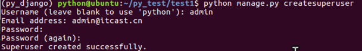</p>
<p>&#x63A5;&#x4E0B;&#x6765;&#x542F;&#x52A8;&#x670D;&#x52A1;&#x5668;&#x3002;</p>
<pre><code>python manage.py runserver
</code></pre><p>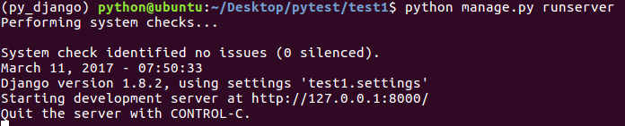</p>
<p>&#x6253;&#x5F00;&#x6D4F;&#x89C8;&#x5668;&#xFF0C;&#x5728;&#x5730;&#x5740;&#x680F;&#x4E2D;&#x8F93;&#x5165;&#x5982;&#x4E0B;&#x5730;&#x5740;&#x540E;&#x56DE;&#x8F66;&#x3002;</p>
<pre><code>http://127.0.0.1:8000/admin/
</code></pre><p></p>
<p>&#x8F93;&#x5165;&#x524D;&#x9762;&#x521B;&#x5EFA;&#x7684;&#x7528;&#x6237;&#x540D;&#x3001;&#x5BC6;&#x7801;&#x5B8C;&#x6210;&#x767B;&#x5F55;&#x3002;</p>
<p>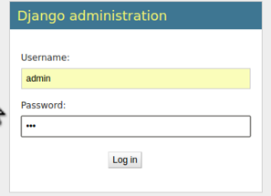</p>
<p>&#x767B;&#x5F55;&#x6210;&#x529F;&#x540E;&#x754C;&#x9762;&#x5982;&#x4E0B;&#xFF0C;&#x4F46;&#x662F;&#x5E76;&#x6CA1;&#x6709;&#x56FE;&#x4E66;&#x3001;&#x82F1;&#x96C4;&#x7684;&#x7BA1;&#x7406;&#x5165;&#x53E3;&#xFF0C;&#x63A5;&#x4E0B;&#x6765;&#x8FDB;&#x884C;&#x7B2C;&#x4E09;&#x6B65;&#x64CD;&#x4F5C;&#x3002;</p>
<p>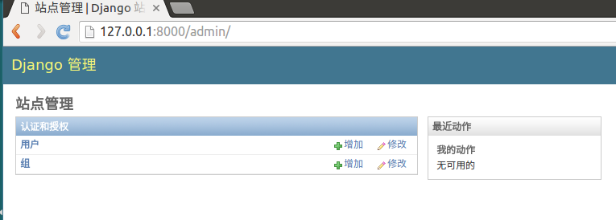</p>
<h4 id="3&#x6CE8;&#x518C;&#x6A21;&#x578B;&#x7C7B;">3.&#x6CE8;&#x518C;&#x6A21;&#x578B;&#x7C7B;</h4>
<p>&#x767B;&#x5F55;&#x540E;&#x53F0;&#x7BA1;&#x7406;&#x540E;&#xFF0C;&#x9ED8;&#x8BA4;&#x6CA1;&#x6709;&#x6211;&#x4EEC;&#x521B;&#x5EFA;&#x7684;&#x5E94;&#x7528;&#x4E2D;&#x5B9A;&#x4E49;&#x7684;&#x6A21;&#x578B;&#x7C7B;&#xFF0C;&#x9700;&#x8981;&#x5728;&#x81EA;&#x5DF1;&#x5E94;&#x7528;&#x4E2D;&#x7684;admin.py&#x6587;&#x4EF6;&#x4E2D;&#x6CE8;&#x518C;&#xFF0C;&#x624D;&#x53EF;&#x4EE5;&#x5728;&#x540E;&#x53F0;&#x7BA1;&#x7406;&#x4E2D;&#x770B;&#x5230;&#xFF0C;&#x5E76;&#x8FDB;&#x884C;&#x589E;&#x5220;&#x6539;&#x67E5;&#x64CD;&#x4F5C;&#x3002;</p>
<p>&#x6253;&#x5F00;booktest/admin.py&#x6587;&#x4EF6;&#xFF0C;&#x7F16;&#x5199;&#x5982;&#x4E0B;&#x4EE3;&#x7801;&#xFF1A;</p>
<pre><code>from django.contrib import admin
from booktest.models import BookInfo,HeroInfo

admin.site.register(BookInfo)
admin.site.register(HeroInfo)
</code></pre><p>&#x5230;&#x6D4F;&#x89C8;&#x5668;&#x4E2D;&#x5237;&#x65B0;&#x9875;&#x9762;&#xFF0C;&#x53EF;&#x4EE5;&#x770B;&#x5230;&#x6A21;&#x578B;&#x7C7B;BookInfo&#x548C;HeroInfo&#x7684;&#x7BA1;&#x7406;&#x4E86;&#x3002;</p>
<p>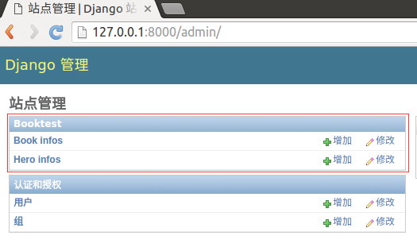</p>
<p>&#x70B9;&#x51FB;&#x7C7B;&#x540D;&#x79F0;&quot;BookInfo&quot;&#x53EF;&#x4EE5;&#x8FDB;&#x5165;&#x5217;&#x8868;&#x9875;&#xFF0C;&#x9ED8;&#x8BA4;&#x53EA;&#x6709;&#x4E00;&#x5217;&#x3002;</p>
<p>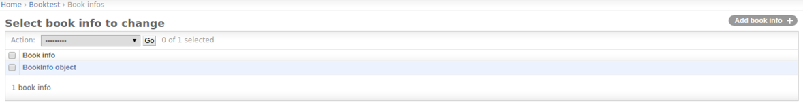</p>
<p>&#x5728;&#x5217;&#x8868;&#x9875;&#x4E2D;&#x70B9;&#x51FB;&quot;&#x589E;&#x52A0;&quot;&#x53EF;&#x4EE5;&#x8FDB;&#x5165;&#x589E;&#x52A0;&#x9875;&#xFF0C;Django&#x4F1A;&#x6839;&#x636E;&#x6A21;&#x578B;&#x7C7B;&#x7684;&#x4E0D;&#x540C;&#xFF0C;&#x751F;&#x6210;&#x4E0D;&#x540C;&#x7684;&#x8868;&#x5355;&#x63A7;&#x4EF6;&#xFF0C;&#x6309;&#x63D0;&#x793A;&#x586B;&#x5199;&#x8868;&#x5355;&#x5185;&#x5BB9;&#x540E;&#x70B9;&#x51FB;&quot;&#x4FDD;&#x5B58;&quot;&#xFF0C;&#x5B8C;&#x6210;&#x6570;&#x636E;&#x521B;&#x5EFA;&#xFF0C;&#x521B;&#x5EFA;&#x6210;&#x529F;&#x540E;&#x8FD4;&#x56DE;&#x5217;&#x8868;&#x9875;&#x3002;</p>
<p>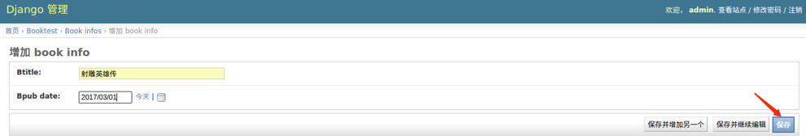</p>
<p>&#x5728;&#x5217;&#x8868;&#x9875;&#x4E2D;&#x70B9;&#x51FB;&#x67D0;&#x884C;&#x7684;&#x7B2C;&#x4E00;&#x5217;&#x53EF;&#x4EE5;&#x8FDB;&#x5165;&#x4FEE;&#x6539;&#x9875;&#x3002;</p>
<p>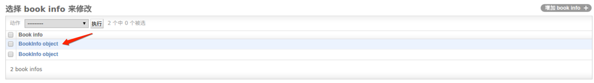</p>
<p>&#x6309;&#x7167;&#x63D0;&#x793A;&#x8FDB;&#x884C;&#x5185;&#x5BB9;&#x7684;&#x4FEE;&#x6539;&#xFF0C;&#x4FEE;&#x6539;&#x6210;&#x529F;&#x540E;&#x8FDB;&#x5165;&#x5217;&#x8868;&#x9875;&#x3002;&#x5728;&#x4FEE;&#x6539;&#x9875;&#x70B9;&#x51FB;&#x201C;&#x5220;&#x9664;&#x201D;&#x53EF;&#x4EE5;&#x5220;&#x9664;&#x4E00;&#x9879;&#x3002;</p>
<p>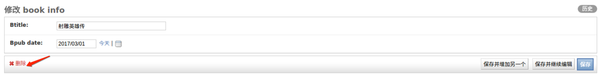</p>
<p>&#x5220;&#x9664;&#xFF1A;&#x5728;&#x5217;&#x8868;&#x9875;&#x52FE;&#x9009;&#x60F3;&#x8981;&#x5220;&#x9664;&#x7684;&#x590D;&#x9009;&#x6846;&#xFF0C;&#x53EF;&#x4EE5;&#x5220;&#x9664;&#x591A;&#x9879;&#x3002;</p>
<p>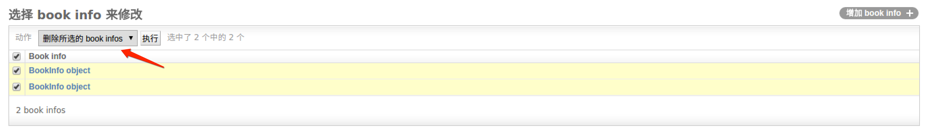</p>
<p>&#x70B9;&#x51FB;&#x6267;&#x884C;&#x540E;&#x8FDB;&#x5165;&#x786E;&#x8BA4;&#x9875;&#x9762;&#xFF0C;&#x5220;&#x9664;&#x540E;&#x56DE;&#x6765;&#x5217;&#x8868;&#x9875;&#x9762;&#x3002;</p>
<p></p>
<p>&#x6570;&#x636E;&#x90FD;&#x5220;&#x9664;&#x4E86;&#xFF0C;&#x63A5;&#x4E0B;&#x6765;&#x624B;&#x52A8;&#x9020;&#x4E00;&#x4E9B;&#x6570;&#x636E;&#x51FA;&#x6765;&#x3002;</p>
<h4 id="4&#x81EA;&#x5B9A;&#x4E49;&#x7BA1;&#x7406;&#x9875;&#x9762;">4.&#x81EA;&#x5B9A;&#x4E49;&#x7BA1;&#x7406;&#x9875;&#x9762;</h4>
<p>&#x5728;&#x5217;&#x8868;&#x9875;&#x53EA;&#x663E;&#x793A;&#x51FA;&#x4E86;BookInfo object&#xFF0C;&#x5BF9;&#x8C61;&#x7684;&#x5176;&#x5B83;&#x5C5E;&#x6027;&#x5E76;&#x6CA1;&#x6709;&#x5217;&#x51FA;&#x6765;&#xFF0C;&#x67E5;&#x770B;&#x975E;&#x5E38;&#x4E0D;&#x65B9;&#x4FBF;&#x3002;
Django&#x63D0;&#x4F9B;&#x4E86;&#x81EA;&#x5B9A;&#x4E49;&#x7BA1;&#x7406;&#x9875;&#x9762;&#x7684;&#x529F;&#x80FD;&#xFF0C;&#x6BD4;&#x5982;&#x5217;&#x8868;&#x9875;&#x8981;&#x663E;&#x793A;&#x54EA;&#x4E9B;&#x503C;&#x3002;</p>
<p>&#x6253;&#x5F00;booktest/admin.py&#x6587;&#x4EF6;&#xFF0C;&#x81EA;&#x5B9A;&#x4E49;&#x7C7B;&#xFF0C;&#x7EE7;&#x627F;&#x81EA;admin.ModelAdmin&#x7C7B;&#x3002;</p>
<ul>
<li>&#x5C5E;&#x6027;list_display&#x8868;&#x793A;&#x8981;&#x663E;&#x793A;&#x54EA;&#x4E9B;&#x5C5E;&#x6027;</li>
</ul>
<pre><code>class BookInfoAdmin(admin.ModelAdmin):
    list_display = [&apos;id&apos;, &apos;btitle&apos;, &apos;bpub_date&apos;]
</code></pre><ul>
<li>&#x4FEE;&#x6539;&#x6A21;&#x578B;&#x7C7B;BookInfo&#x7684;&#x6CE8;&#x518C;&#x4EE3;&#x7801;&#x5982;&#x4E0B;</li>
</ul>
<pre><code>admin.site.register(BookInfo, BookInfoAdmin)
</code></pre><ul>
<li>&#x5237;&#x65B0;BookInfo&#x7684;&#x5217;&#x8868;&#x9875;&#xFF0C;&#x6240;&#x6709;&#x5C5E;&#x6027;&#x90FD;&#x663E;&#x793A;&#x51FA;&#x6765;&#x4E86;</li>
</ul>
<p>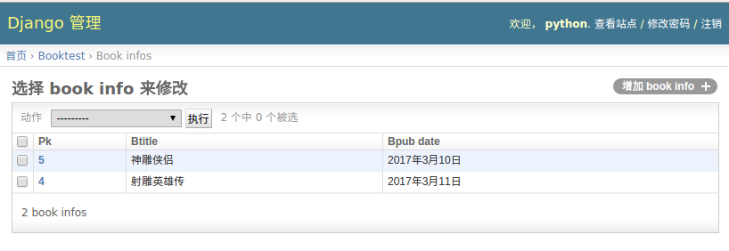</p>
<ul>
<li>&#x6700;&#x7EC8;booktest/admin.py&#x6587;&#x4EF6;&#x4EE3;&#x7801;&#x5982;&#x4E0B;</li>
</ul>
<pre><code>from django.contrib import admin
from booktest.models import BookInfo,HeroInfo

class BookInfoAdmin(admin.ModelAdmin):
    list_display = [&apos;id&apos;, &apos;btitle&apos;, &apos;bpub_date&apos;]
class HeroInfoAdmin(admin.ModelAdmin):
    list_display = [&apos;id&apos;, &apos;hname&apos;,&apos;hgender&apos;,&apos;hcomment&apos;]

admin.site.register(BookInfo,BookInfoAdmin)
admin.site.register(HeroInfo,HeroInfoAdmin)
</code></pre>
                    
                    </section>
                
                
                </div>
            </div>
        </div>

        
        <a href="../part1/4.html" class="navigation navigation-prev " aria-label="Previous page: 设计模型"><i class="fa fa-angle-left"></i></a>
        
        
        <a href="../part1/6.html" class="navigation navigation-next " aria-label="Next page: 视图及URL"><i class="fa fa-angle-right"></i></a>
        
    </div>
</div>

        
<script src="../gitbook/app.js"></script>

    
    <script src="../gitbook/plugins/gitbook-plugin-search/lunr.min.js"></script>
    

    
    <script src="../gitbook/plugins/gitbook-plugin-search/search.js"></script>
    

    
    <script src="../gitbook/plugins/gitbook-plugin-sharing/buttons.js"></script>
    

    
    <script src="../gitbook/plugins/gitbook-plugin-fontsettings/buttons.js"></script>
    

    
    <script src="../gitbook/plugins/gitbook-plugin-livereload/plugin.js"></script>
    

<script>
require(["gitbook"], function(gitbook) {
    var config = {"highlight":{},"search":{"maxIndexSize":1000000},"sharing":{"facebook":true,"twitter":true,"google":false,"weibo":false,"instapaper":false,"vk":false,"all":["facebook","google","twitter","weibo","instapaper"]},"fontsettings":{"theme":"white","family":"sans","size":2},"livereload":{}};
    gitbook.start(config);
});
</script>

        
    </body>
    
</html>
